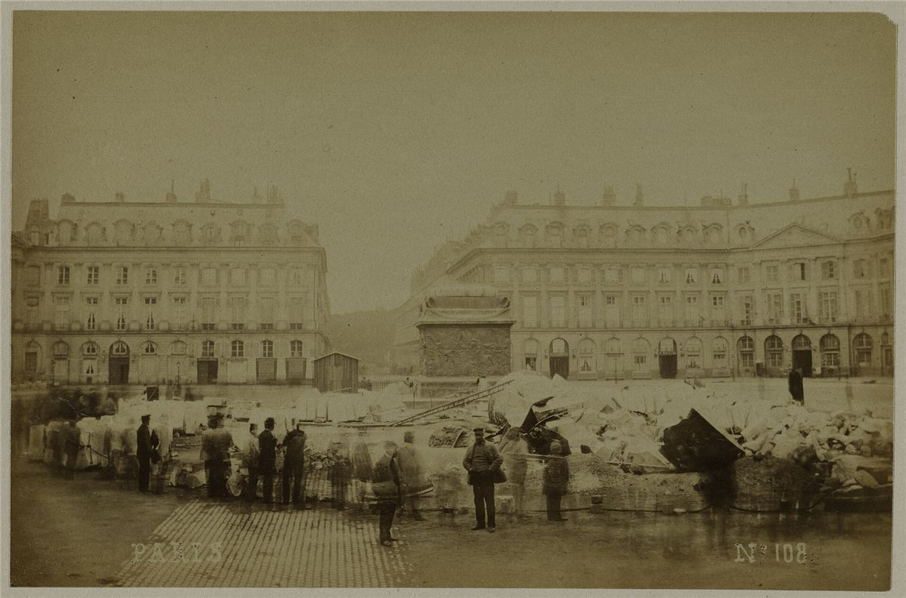
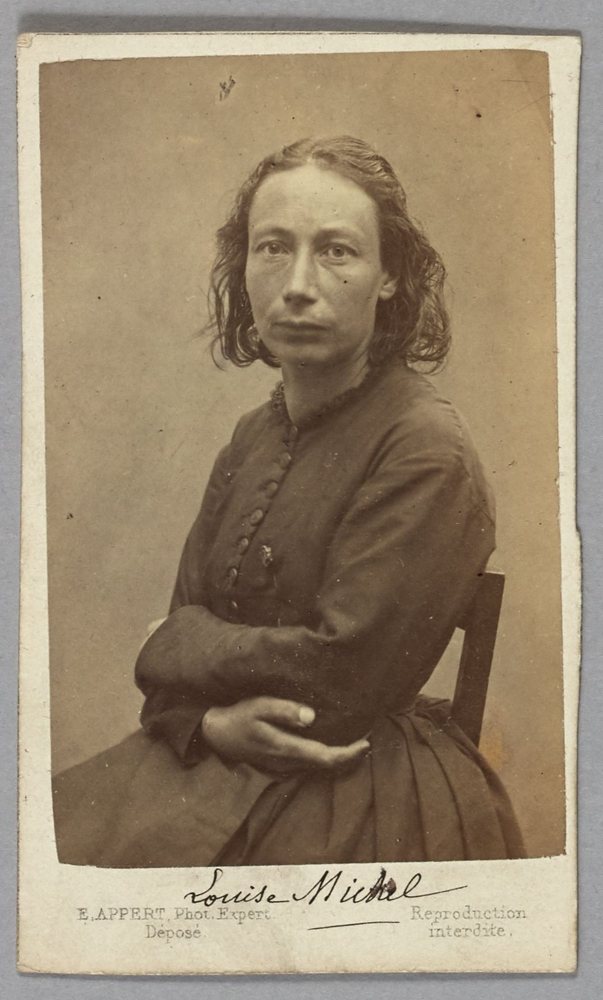

Ce que la Commune a décidé

| Date | Décision |
|---|---|
| 29 mars | Remise générale des loyers dus depuis octobre 1870. |
| 2 avril | Séparation de l'Église et de l'État ; plafond des salaires publics à 6 000 francs par an. |
| 6 avril | Des gardes nationaux brûlent publiquement la guillotine, place Voltaire. |
| 10 avril | Pension aux veuves et aux enfants des gardes tués, mariés ou non, légitimes ou non. |
| 16 avril | Les ateliers abandonnés sont confiés à des coopératives ouvrières. |
| 20 avril | Interdiction du travail de nuit dans les boulangeries. |
| 27 avril | Interdiction des amendes et retenues sur salaire imposées par les patrons. |
| 6 mai | Restitution gratuite des objets de première nécessité déposés au mont-de-piété. |
| Mai | Écoles gratuites et laïques dans plusieurs arrondissements, écoles professionnelles, y compris pour les filles ; projet d'égalité de salaire des institutrices et instituteurs. |
| 16 mai | La colonne Vendôme, monument à la gloire des guerres napoléoniennes, est abattue. |
Les femmes de la Commune

Ce sont des femmes qui ont donné l'alerte le 18 mars. Elles sont partout ensuite : ambulancières, cantinières, oratrices des clubs, combattantes sur les barricades.
- Louise Michel, institutrice, garde nationale en uniforme, ambulancière, devenue anarchiste en déportation.
- Élisabeth Dmitrieff, jeune militante russe de l'Internationale, fonde le 11 avril l'Union des femmes pour la défense de Paris et les soins aux blessés.
- Nathalie Le Mel, relieuse, cofondatrice de la coopérative La Marmite, déportée avec Louise Michel.
- André Léo, romancière et journaliste, qui dénonce le mépris de certains communards pour les femmes.
- Paule Minck, oratrice des clubs, qui ouvre une école gratuite dans son quartier.
Après la défaite, Versailles invente la légende des « pétroleuses », femmes qui auraient incendié Paris. Aucune preuve n'en a été trouvée ; elle a surtout servi à justifier la répression.
Une révolution culturelle
- La Fédération des artistes, présidée par Gustave Courbet, ouvre les musées et gère elle-même les arts.
- Pendant la Semaine sanglante, Eugène Pottier écrit le poème qui deviendra L'Internationale.
- Le Temps des cerises, chanson de Jean-Baptiste Clément écrite avant la Commune, sera dédiée par son auteur à Louise, une ambulancière rencontrée sur une barricade le 28 mai 1871.
Ce qu'en tirent les anarchistes
- Bakounine, dès 1871, salue la Commune comme une négation de l'État, même si elle n'est pas allée au bout.
- Kropotkine, dix ans plus tard, lui reproche d'avoir repoussé la question de la propriété et créé un gouvernement : voir sa fiche.
- Louise Michel devient anarchiste en Nouvelle-Calédonie, où elle soutient la révolte kanak de 1878.
- Pour beaucoup, la Commune montre à la fois que le peuple peut se gouverner, et qu'aucun pouvoir central, même révolutionnaire, ne protège une révolution.
Chaque année, fin mai, une montée au mur des Fédérés rend hommage aux communardes et communards.
Retour au début : la Commune en 72 jours. Autres dossiers : Espagne 1936, zapatistes, Rojava.
Sources et pour aller plus loin
Lire
- Les Pétroleuses, Édith Thomas, Gallimard, 1963.Le premier grand livre d'histoire sur les femmes de la Commune.
- Eugène Varlin, ouvrier relieur 1839-1871, Michèle Audin, Libertalia, 2019.Les écrits et la vie d'un communard qui défendait l'égalité des femmes au travail.
- Les Mémoires de Louise MichelNotre fiche : la Commune racontée par l'une de ses combattantes.
Sur le web
- L'Union des femmesLa grande organisation féminine de la Commune.
- Élisabeth Dmitrieff et Nathalie Le MelDeux de ses fondatrices.
- Les Amies et Amis de la Commune de Paris 1871Pour continuer à faire vivre cette mémoire.
Dossier rédigé par la bande à Mamie à partir de travaux d'historiennes et d'historiens et de textes des mouvements concernés. Libre de reproduction.